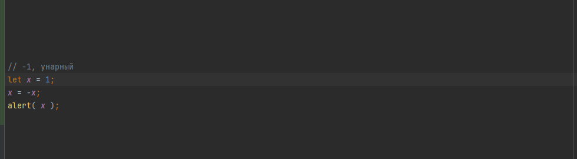
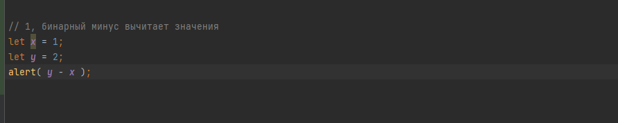
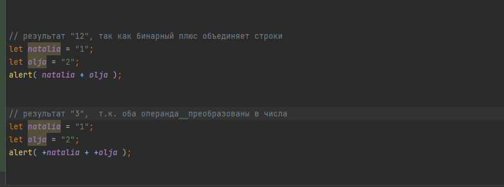
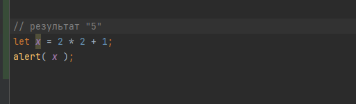
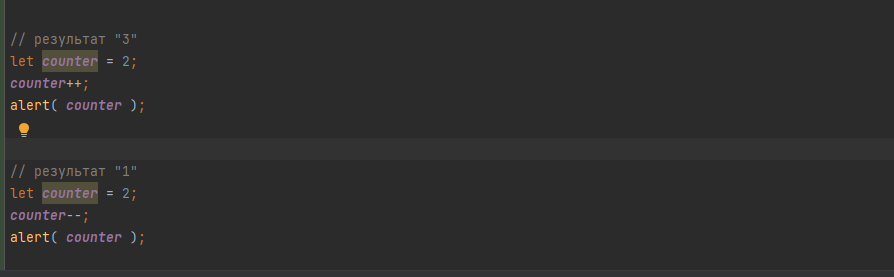

JavaScript поддерживает бинарные и унарные операторы, а также ещё один специальный тернарный оператор - условный оператор.
то, к чему применяется оператор. В сложении 3 + 1 есть два операнда: левый 3, а правый 1.
оператор, который применяется к одному операнду.
оператор, который применяется к двум операндам.

Сложение +,
Вычитание -,
Умножение *,
Деление /,
Взятие остатка от деления %,
Возведение в степень **
При помощи плюса '+' складывают числа.
Но если бинарный оператор '+' применить к строкам, то он их объединяет в одну
если хотя бы один операнд является строкой, то второй будет также преобразован в строку
унарный плюс преобразует в число.
когда переменной что-либо присваивают
операция увеличения или уменьшения на единицу.
